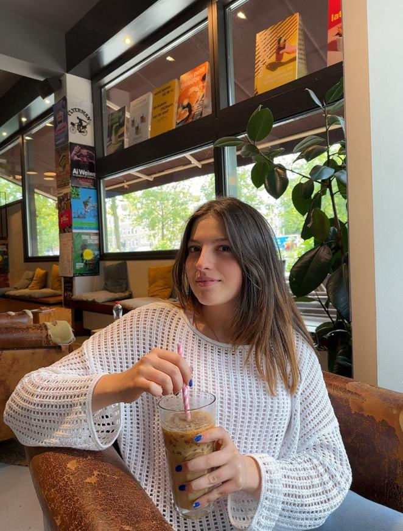
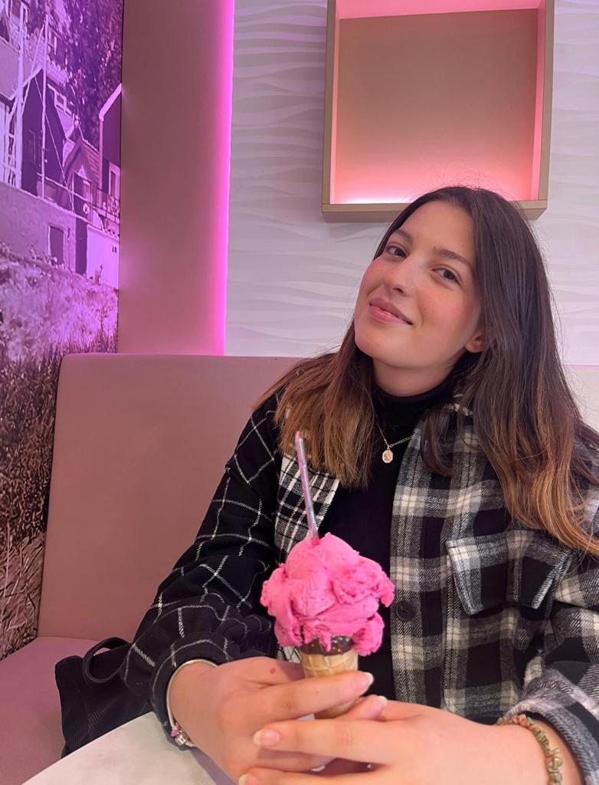
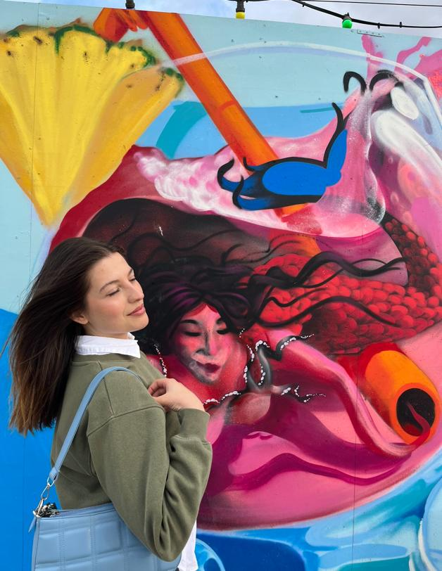
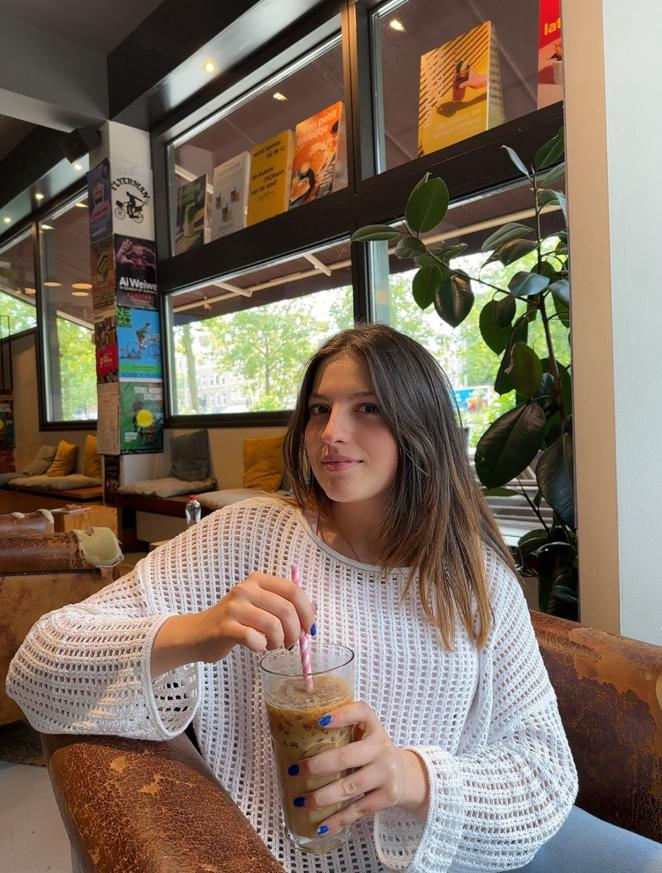
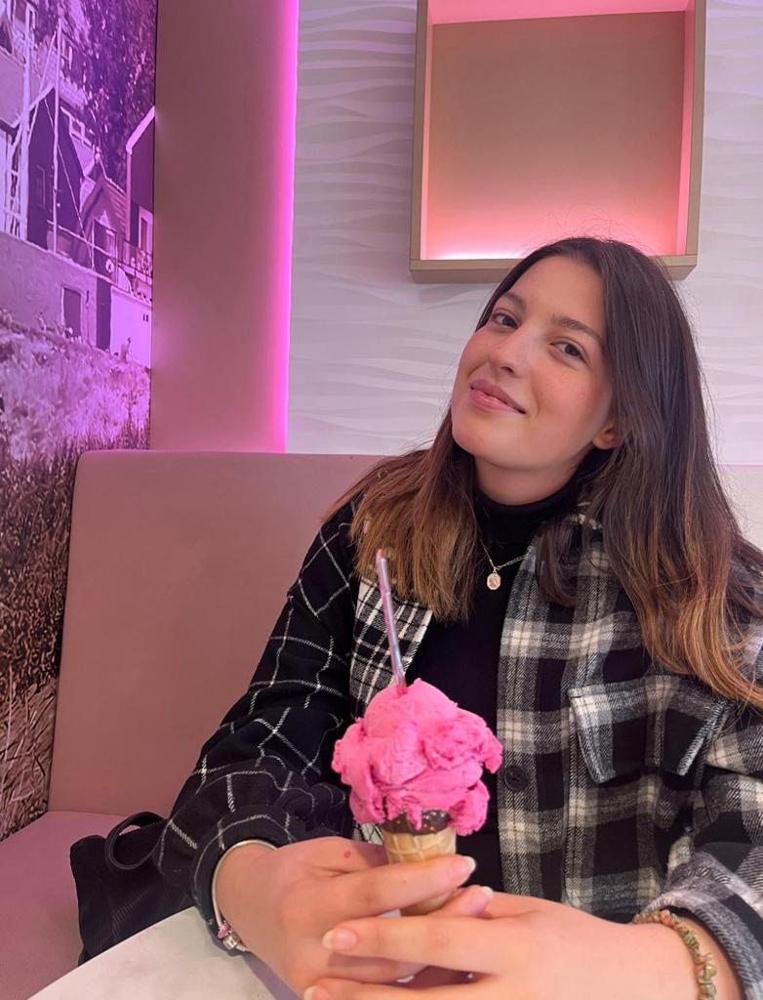
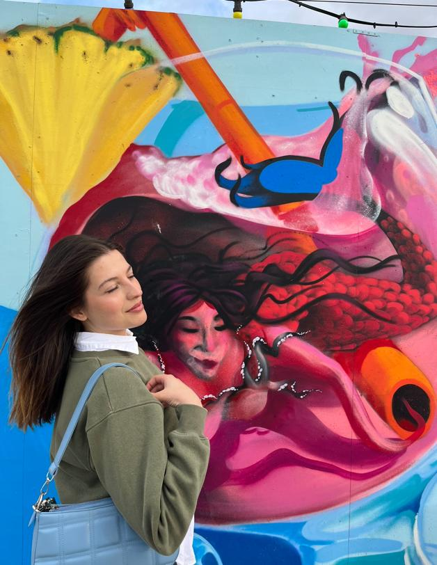

-
Wie ben ik?
 





Ik ben Beyza, de vriendelijke persoon die je in je leven zou kunnen ontmoeten. Grapje, haha. Ik studeer aan de HvA in mijn tweede jaar van de opleiding Communication and Multimedia Design. Ik kom uit Turkije en ben al 5 jaar in Nederland. Ik hou van reizen. Dat is mijn favoriete activiteit. Een spontane vakantie maakt me ontzettend blij. Nieuwe plekken ontdekken kan me motivatie geven in het leven. Ik voel me erg gelukkig als ik ergens naartoe reis dat ik nog niet eerder heb ontdekt.
-
Waar gaat de website over?
Ik heb deze website gecreëerd om mijn reiservaringen te delen en hopelijk anderen te inspireren om prachtige vakantiebestemmingen te verkennen. Ik nodig je uit om mijn reisgeschiedenis te verkennen en wellicht dien ik als een bron van inspiratie voor jouw toekomstige reizen.